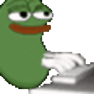
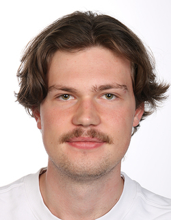

|
Navigation
Live Webcam
 Matti, hard at work
100% HANDWRITTEN CONTENT
best viewed with ANY browser
COMIC SANS approved
CLAUDE crafted template
NO JavaScript AT ALL
|
 <-- this is me!
Hello and welcome to my personal page! About MeI'm Matti, currently pursuing my M.Sc. in Computer Science at TU Berlin. My main interests are in cybersecurity (mostly hardware and embedded systems security), microarchitecture design, and low-level programming. Outside of university, I enjoy weightlifting (not the Olympic kind) as well as some of my other constantly rotating interests (e.g., shaving soaps). My Life so FarI completed my Abitur in 2021, after which I started my Bachelor's degree in Computer Science at TU Berlin. During my Bachelor's, I spent one year working part-time each as a systems administrator for Cronon GmbH and a software developer for Codewerk GmbH. Through these jobs, I gained notable insights into how professional software is developed and how large software systems are operated. I finished my Bachelor's in 2025, writing my thesis on attacking the RPMC security feature of modern SPI flash chips, through voltage-glitching and other hardware attacks. Towards the start of my Master's, I took up a student position at the Security in Telecommunications (SecT) chair at TU Berlin, still focused on firmware and TPM security research. Currently I'm spending an exchange semester at KAIST in Daejeon, South Korea :). Fun Stuff I Did» Hello Again NEW!While trying to find real-world targets for the RPMC SPI flash chips I researched during my Bachelor's thesis, we discovered that they were used to protect the fTPM state on multiple modern laptops. A couple of months of hardware research and PoC prototyping later, we demonstrated the existence of multiple hardware vulnerabilities, leading to my first peer-reviewed publication. |